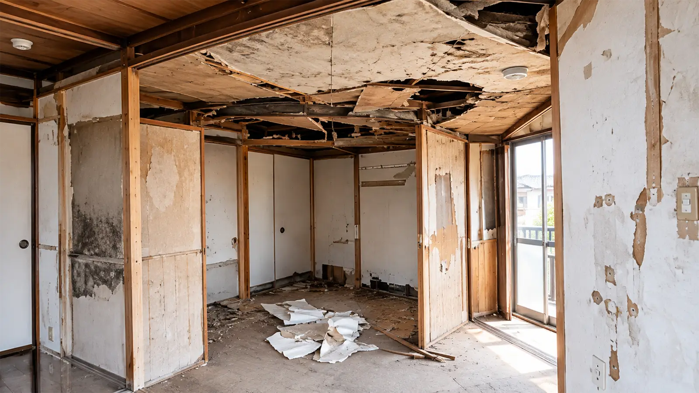
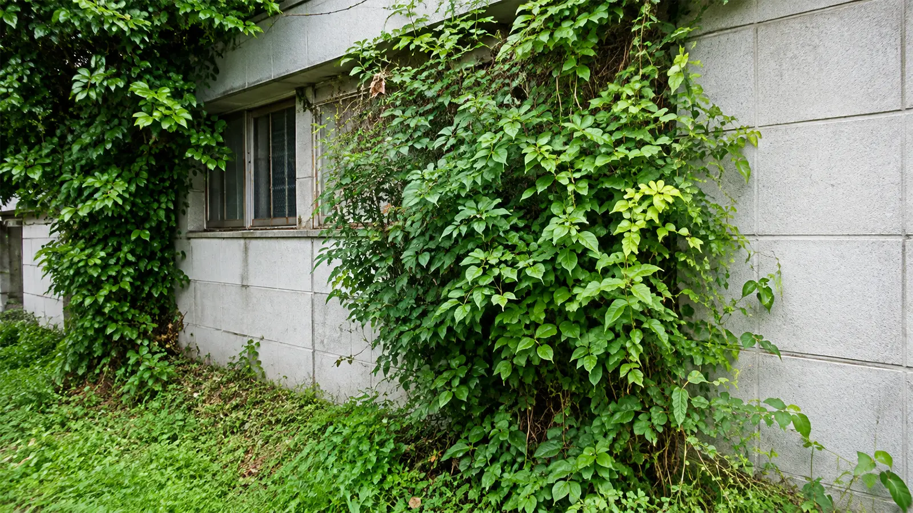
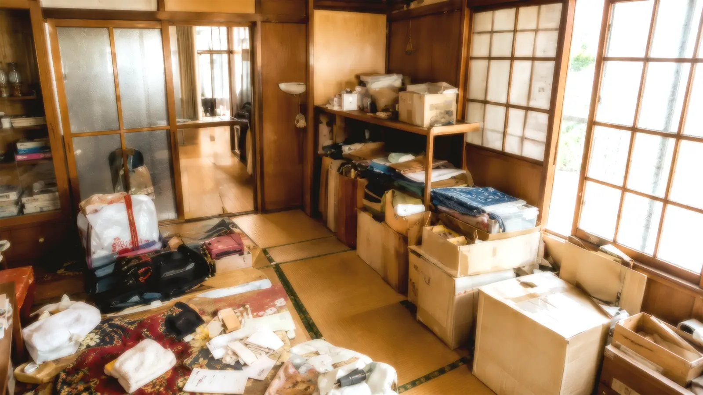

相続した実家を
どうするか
決まっていない
このようなお悩みはありませんか？
空き家になって
数年が経過している
荷物が残ったまま
になっている
遠方に住んでいて
管理できない
建物が古く
売れるか不安
再建築不可と
言われた
他社で
断られた
空き家を放置するリスク
固定資産税の負担が続く

空き家を所有している限り、
固定資産税や都市計画税などの
負担が発生します。
建物の老朽化が進む

人が住まなくなることで劣化が
進みやすくなります。雨漏りや
設備故障など、修繕費用が発生
する場合もあります。
近隣トラブルにつながる

雑草や樹木の繁茂、害虫や
不法投棄など、近隣との
トラブルの原因になることが
あります。
行政指導を受ける
可能性がある

管理状態によっては、行政から
改善指導を受ける場合が
あります。
ご相談から解決までの流れ
-
お問い合わせ
お電話・メール・LINEより
お気軽にご相談ください。 -
現地調査
物件の状況や
周辺環境を確認します。 -
ご提案
物件状況やご希望に合わせて、
最適な進め方をご提案します。 -
ご契約
内容にご納得いただいたうえで
契約手続きを進めます。 -
お引渡し
お引渡し完了後も
必要に応じてサポートします。
相談無料
査定無料
現状のまま相談可能
残置物が残っていても相談可能
空き家買取バンクが選ばれる理由
空き家専門
空き家に関するご相談に特化しているため、状況に応じたご提案が可能です。
残置物対応
家具や生活用品が残った状態でもご相談いただけます。
古物商許可
古物商許可を取得しており、残置物の整理に関するご相談にも対応しています。
相続不動産対応
相続した実家や、相続手続きに関するお悩みにも対応しています。
士業との連携
司法書士・税理士・弁護士など、専門家と連携しながらサポートします。
再建築不可対応
一般的には売却が難しいとされる物件でも、状況に応じてご提案します。

古物商許可を活かした
残置物対応
空き家売却のご相談で多いのが、「荷物が残ったまま」というお悩みです。
空き家買取バンクでは、残置物に関するご相談にも対応しています。
-
荷物が大量に
残っている -
何から片付ければ
いいか分からない -
遠方に住んでいて
整理できない
お聞かせください
解決事例
解決事例一覧を見る
相続した実家を売却した事例
相続した実家をどうするか決められずご相談。状況に合わせたご提案でスムーズに売却できました。

相続登記と品物整理を経て売却した事例
相続登記が未了でお困りでしたが、士業と連携して品物整理をサポートし、売却を実現しました。

残置物が残る空き家を売却した事例
荷物が大量に残り、片付けができずにご相談。荷物整理もそのままで売却できました。

遠方にあるご実家を売却した事例
遠方で管理ができないご実家をご相談。現地調査からお引渡しまでお任せいただきました。

再建築不可の可能性がある空き家を売却した事例
再建築不可と言われた物件でしたが、状況に応じたご提案で売却できました。
よくあるご質問
残置物が残ったままでも相談できますか？
はい、残置物が残った状態でもご相談いただけます。
相続登記前でも相談できますか？
状況により異なりますので、まずは現在の状況をお聞かせください。
遠方に住んでいても相談できますか？
はい、遠方にお住まいの方からのご相談にも対応しています。
相談だけでも可能ですか？
はい、売却を決めていない段階でもお気軽にご相談ください。
査定費用はかかりますか？
ご相談・査定は無料です。

空き家のお悩みはありませんか？
相続した実家、長年放置している空き家、残置物が残る住宅など、空き家に関するお悩みは一人で抱え込まずにご相談ください。